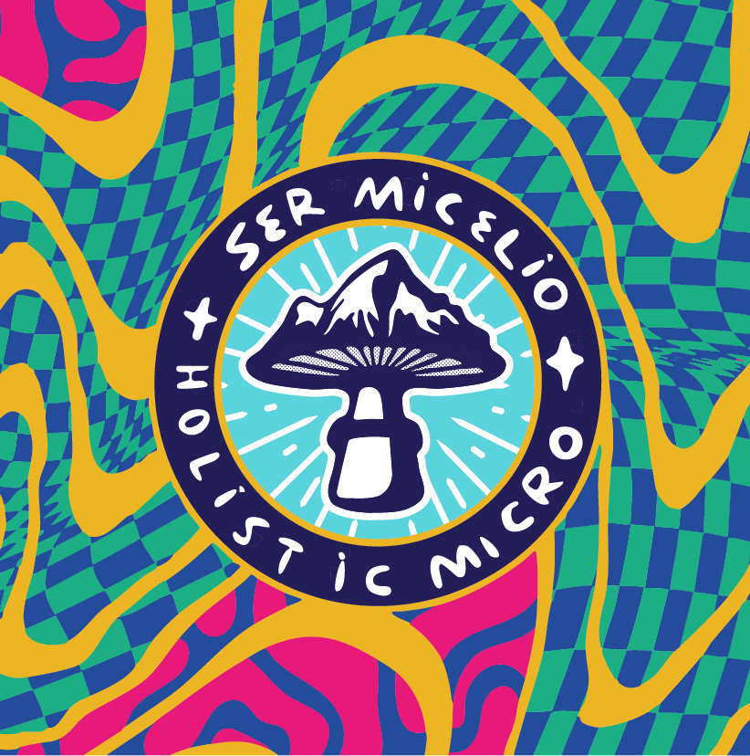

Manual de MarcaSer Micelio
La identidad visual de Ser Micelio · Holistic Micro. Guía de uso del logotipo, la paleta de colores y las tipografías oficiales.
Identidad de marcaLa identidad visual de Ser Micelio · Holistic Micro. Guía de uso del logotipo, la paleta de colores y las tipografías oficiales.
Identidad de marcaLa esencia
Una marca viva, psicodélica y terrenal
Identidad visual

El sello circular “SER MICELIO · HOLISTIC MICRO” es la versión completa de marca para aplicaciones destacadas: perfiles, packaging y piezas de portada.
Paleta cromática
Cinco colores vibrantes que se combinan entre sí. El violeta es la base; el resto aportan energía, contraste y frescura.
Sistema tipográfico
Titulares
Más allá del café, la energía fluía única: corazón, raíz y música en común.
Se usa para títulos, botones y destacados. Aporta carácter y personalidad a la marca.
Manuscrita / detalle
Kopi Senja Script se reserva para acentos manuscritos, frases cortas y toques emotivos. Nunca para textos largos.
Para párrafos y textos largos en web se utiliza Poppins, que asegura legibilidad y acompaña bien al sistema tipográfico.
Importante · a decidir
Las tipografías de marca Kopi Senja Sans y Kopi Senja Script son fuentes de estilo (display) que no incluyen los caracteres acentuados del español: á, é, í, ó, ú, ñ, ü ni los signos ¿ ¡. Al escribir una palabra con tilde, el navegador reemplaza sólo esa letra por una tipografía de respaldo, y se nota la mezcla. No es un error: esos glifos no existen dentro del archivo de fuente.
Hay cuatro caminos posibles. Elegí el que mejor se adapte a la marca:
Para arrancar rápido y sin costos, Opción A. Si la marca necesita escribir con acentos de forma habitual, la Opción C es la más prolija a largo plazo.